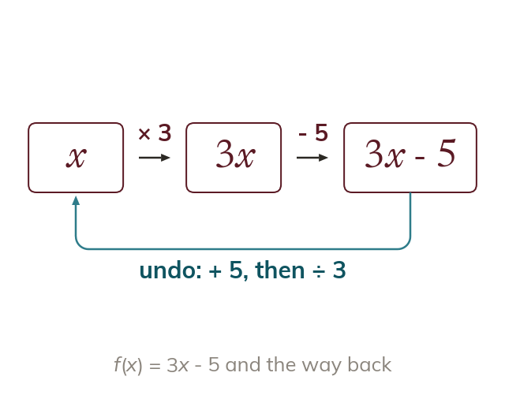
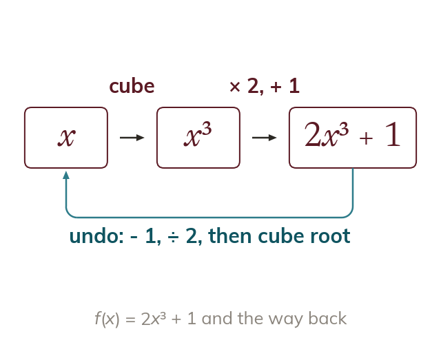
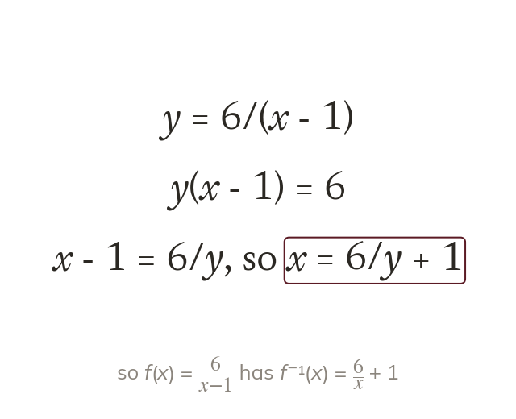

Undo in reverse order
The inverse function f⁻¹ undoes f. Its steps undo those of f, in reverse order.
Converting °C to °F is a function, and converting back is its inverse: the same steps undone in reverse. Today we find inverse functions, by machine and by algebra.
Work down the page at your own pace. Write every answer in your book first, then click to check it.
Read each card, then follow the worked examples one step at a time.

The inverse function f⁻¹ undoes f. Its steps undo those of f, in reverse order.

Algebraically, write y = f(x) and make x the subject. Then rename the input x.
Pick an answer. If it's wrong, the feedback tells you which mistake it was.
Read each card, then follow the worked examples one step at a time.

A power is undone by the matching root. In 2x³ + 1 the cube is applied first, so it is undone last.

When x is in a denominator, multiplying clears it. Then x stands alone after one more step.
Pick an answer. If it's wrong, the feedback tells you which mistake it was.
Finished? Next lesson: 11H.9.7 Harder Inverse Functions.
Log in, then search for a code to practise that skill.
Videos, worksheets and more on each part of this lesson.